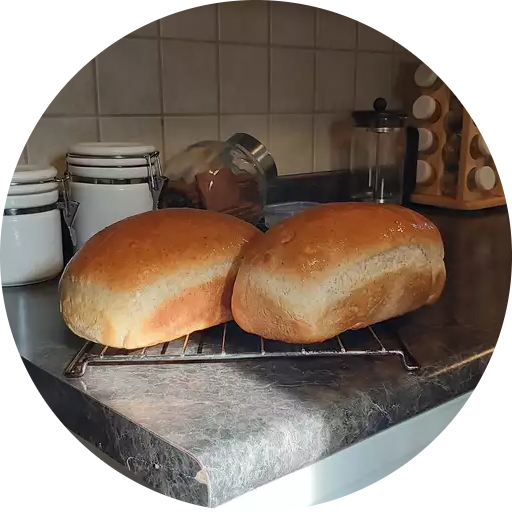

I'm Clea.
When I'm not serving the best customers in the world at Amazon or improving my coding skills in class, my time is spent on the following things:
Delivering meals and groceries
I work as an Independant Contractor with Doordash Food Delivery and
Takeout Services. This service also provides grocery shopping and
other pickup and drop services. Every now and then, I would get an
order to pick up a few things from Dollar General or Carlie C's, a
local grocery store in my town.
There are people in my community who have no form of transprtation
readily available to them, so they turn to Doordash to help out in
that area. I feel good knowing I am doing my part to help these people
out in their time of need. Its especially rewarding when I deliver to
an elderly person who seems to be living alone. They are more often
than not regular users of the service and I have developed a rapport
with them which they appreciate.
Kickboxing and Zumba
American brain coach and podcaster Jim Kwik has a saying, "As your
body moves, your brain grooves". I am a firm believer in this because
I feel like my brain literally operates better when I work out. I've
noticed that anytime I stop working out for a certain period of time,
I start to feel sluggish and unmotivated.
My go to forms of excercise are Zumba and Cardio Kickboxing, which I
do in my garage at home. I remember the moves of most of the songs
from my days of going to zumba classes - Youtube is also an excellent
resource for zumba-, and Ive even made up my own moves for a few
songs. For cardio kickboxing I use a workout video on Amazon Prime.
Every now and then I like to mix things up with a workout video on
Youtube. There is even a Strong By Zumba video which packs in more
intensity in only 20 minutes.
Cooking and Baking

Another way I spend my time is by cooking a good meal or baking some
bread. This is a crucial way for me to avoid eating fast food. Not to
say that I don't indulge - I do have my favorites. The important thing
is that most of my meals are prepared at home, so that eating out is
not a regular occurence. I also meal-prep once a week so that I don't
have to cook or think about cooking especially on my work days.
When I get a chance to bake some bread my tried and true recipe is
Simple Wheat Bread. I found it on allrecipes and I have never deviated
from it because the taste is great and its perfect for making
sandwiches. I think its the honey and butter that does the trick!
Unlike the bread we buy from the store that stays on the counter, I
slice my wheat bread and store it in the freezer so that it stays
fresh. When someone wants a couple slices,they just have to thaw it in
the microwave for about 10-15 seconds and its ready to go.